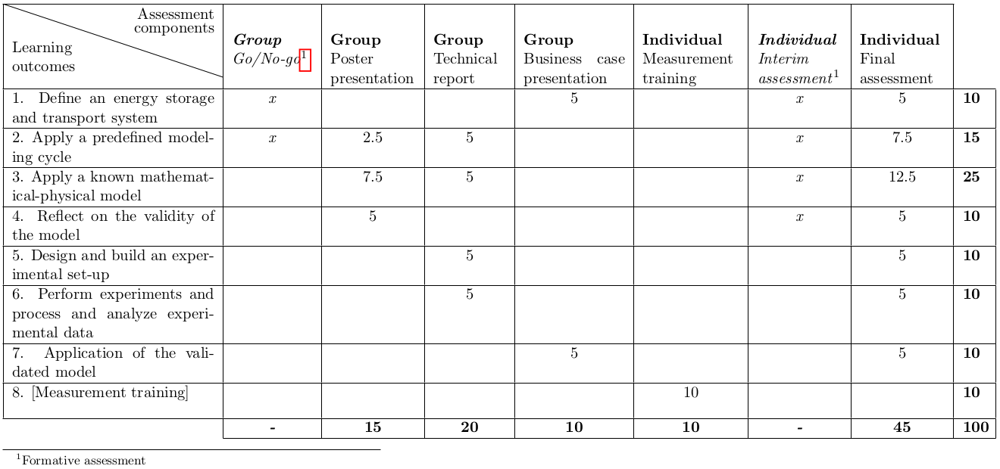
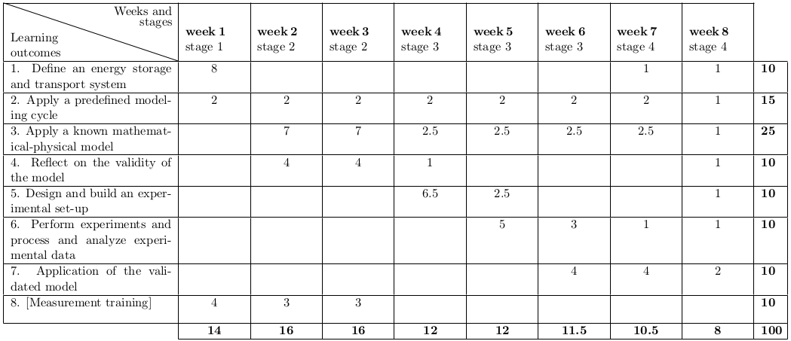

Modeling of time-dependent systems: Energy storage and transport
On this page you will find some of the supporting documents for the EST2020 project.
Constructive alignment documents
The assessment matrix

The teaching and learning activities matrix
